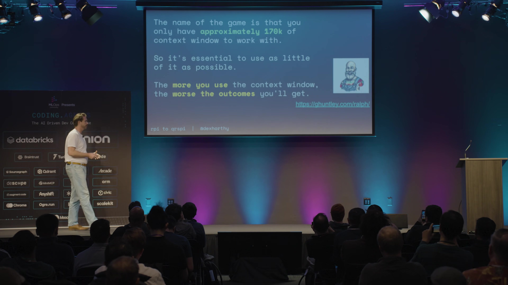
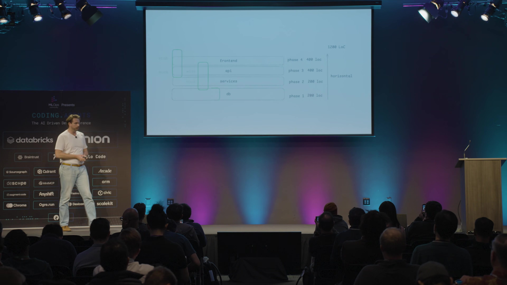

1. 开场与 RPI 的失败
00:00:04 ↗主持人在请 Dex 上来之前，说件事。我刚认识 James，James，能站起来一下吗？他今早告诉我，今晚要组织聚餐，所有人都受邀。二维码看不清，往上调一下。想参加的话，扫一下码，晚上和 James 一起玩。〔现场笑声。〕这正是我们希望这里发生的事，太好了。
00:00:32 ↗主持人你真棒，我很喜欢。下面有请 Dex。刚才有人说该办个胡子比赛，我看不一定能办成。不过他给了我们二百张幻灯片，马上准备讲。
00:00:48 ↗Dex Horthy · 主讲等等，是一百五十八张。
00:00:50 ↗主持人一百五十八张。我们会盯着时间，现在开始计时。
00:00:56 ↗Dex Horthy · 主讲好，开始吧，大家好。我是 Dex。今天标题很长，就不读了，已经开始计时。我从八月左右一直在谈 Coding Agent，十一月还做过一场长演讲。我们讲了很多 Research–Plan–Implement，也就是研究、计划、实现这套方法，在 Hacker News 上获得不少赞。可能已有一万人从我们的开源项目拿走提示词，在小公司到大型企业内部使用。
00:01:28 ↗Dex Horthy · 主讲最初来自这位讲者。有人看过 Yegor 这场演讲吗？他说，我们花了大量 token 和钱，希望提高 AI 开发效率，但实际发现很多时间在返工。可能多交付百分之五十，却有一半是在清理上周的粗糙代码。这是去年的数据，没有考虑 Opus 4.5，所以我会适当上调估计。总的来说，低复杂度、全新项目的任务效果不错，高复杂度、既有代码库里的任务效果不好。我也可以再讲一遍 RPI 为什么很棒，但会很无聊，之前的视频里都有，没看过的可以补充背景。
00:02:12 ↗Dex Horthy · 主讲今天我要讲，我们对 RPI 的哪些认识错了。我们以为已经搞懂 AI 这回事，但我愿意承认错误。第一，结合今天 Twitter 上的讨论，我不认为“不读代码”是可以接受的；第二，也不该通读特别长的计划文件，这两点有关。还有，不能任由 Claude……如果是用户在用的生产代码，出了问题凌晨三点要叫醒你，就不能接受粗制滥造。二〇二六年，不要再制造劣质产物。
00:02:46 ↗Dex Horthy · 主讲我们都还在探索，也经常犯错。但有几件事说对了：没有神奇提示词；不要把思考外包；工程师是这个过程的重要部分；要寻找杠杆。生成的代码很多，应尽量在它写出来之前就纠正方向，而不是等写完所有内容才逐行检查、回头纠偏。
00:03:05 ↗Dex Horthy · 主讲很多人听过 RPI。用过 research_codebase 这个 Claude 命令的举手。保持举手：你会不会这样用，“告诉我这个系统怎么工作”？还是“我要做这个功能，去研究一下”，或者直接给它一张工单？create_plan 呢？是不是“我们要做这个东西，给个计划”？
00:03:32 ↗Dex Horthy · 主讲有人会说：“先把未决问题和大纲拿出来，与我来回讨论，然后再写计划”吗？看来有些人发现了这些“神奇口令”，但很多人没有。自十月起，我们和从小团队到《财富》五百强的数千名工程师合作，不断看到同样现象：把工具给专家，他每周和 Claude 聊七十小时，交付飞快；转交给团队，效果却不总是好。
00:04:02 ↗Dex Horthy · 主讲我们和用户一起深入排查，第一件事是研究质量不好。十一月讲过，我们会选定代码库的一片区域，让子 Agent 沿相关代码做深入的垂直追踪，压缩出即将修改部分的上下文。我们说要客观，避免意见，不写实现方案，只压缩事实：当前代码究竟怎样工作。
00:04:42 ↗Dex Horthy · 主讲熟练工程师擅长把工单转换为问题，让模型接触所有重要代码。例如，要新增一个跨租户执行 reticulate splines 的端点，可以问：“现有端点怎样工作？追踪所有涉及 splines 的逻辑，找出实际执行这些操作的 worker。”这里的 splines 只是举例。但许多人直接说：“研究代码库，这是我要做的功能。”好的研究应该都是事实，一旦告诉模型目标，它就开始输出意见。为什么不希望它提前发表意见，后面再解释。Netflix 的 Jake 说过，不要外包思考。
00:05:21 ↗Dex Horthy · 主讲第二个问题是计划不好。旧规划提示词是个庞然大物，至少八十五条指令，内含“向用户展示设计选项”“写计划前先反馈结构”等步骤。理想会话应该是：带着 Claude 系统提示和工具，调用 create_plan，加载 Skill、工单、研究文档，再派子 Agent 核实研究遗漏的事实。这张图虽然并排画了几列，但今天都代表同一上下文，不是多个窗口，只是幻灯片太横了。
00:06:09 ↗Dex Horthy · 主讲然后 Agent 应提问，给问题一的几个选项，用户逐项选择；再展示执行顺序，问怎么看。用户可能要求先补测试、交换第三和第四阶段；助手修改大纲，用户批准，最后才写计划。这是一个复杂的对齐过程，先搞清楚究竟要构建什么。
00:06:36 ↗Dex Horthy · 主讲但大约一半、可能更多用户，如果没说“与我来回讨论”，或者 Opus 那一小时恰好表现差，模型就直接写计划，宣布完成。没问任何问题，替我作了所有决定，太糟糕了。我们继续挖，发现有人竟说：“必须念对神奇口令。”我在满屋企业工程师面前说“软件给你们了，别忘了念口令”，坦白讲，很尴尬。
00:07:17 ↗Dex Horthy · 主讲加上“先从开放问题和大纲开始，与我讨论，然后再写计划”，它就会提问。但这不是用户的错。一个工具需要反复训练好几个小时才能用好，就该修工具。为什么会跳步骤？今天一个重要结论是：你有指令预算。
00:07:41 ↗Dex Horthy · 主讲我的联合创始人 Kyle 就在现场。他十一月、或者说十二月那阵写过一篇好文章，引用了一篇 arXiv 论文。研究来自去年，现在数字可能高一些：当时前沿模型大约能较一致地遵循一百五十到二百条指令，再多就半听半不听，像掷骰子。如果你的提示词已有八十五条，再加 CLAUDE.md、系统提示、工具和 MCP，就很难完整遵守流程。后面讲我们怎样修。
00:08:16 ↗Dex Horthy · 主讲另一个失败点，是我们曾要求读模型输出的计划。十一月我在台上说，不看计划就没用；有人甚至把计划也发 PR，全队一起审。但一千行计划往往接近一千行代码，差距可能在百分之十左右，而且实现会有意外。让同事花一小时读计划，等实现出来又变了，他还得再读代码，检查改了什么。这不是杠杆，杠杆应是更少工作换更多结果。
00:08:58 ↗Dex Horthy · 主讲所以新建议是：别通读长计划，请读代码。反正差不多的工作量，把杠杆找在别处。你可能说，Dex，八月你还说不必读代码，看计划就够，直接让 Claude 写。我错了，我愿意承认。我们试了大约半年不读代码，结局不好，不得不拆掉并重写系统里很大一部分。

00:09:31 ↗Dex Horthy · 主讲也有人说，其他人也不读啊。比如 Beads，据说已经三十万行还在增长，没人读过；OpenClaw 的 Pete 说，我知道结构和组件怎么拼起来，但并不逐行读每个 PR。这些是开源项目，不收费，坏了不一定凌晨三点叫醒谁，做错也不一定罚几百万。不过它们很酷，我对维护者的成就深感敬佩，而且风险并不低，OpenClaw 坏了仍会有很多人不高兴。只是这和在受监管行业交付生产 SaaS 不一样。
00:10:13 ↗Dex Horthy · 主讲如果有人依赖你的代码，拜托，请读它。我们有一个职业要维护。二〇二六年本应是不再粗制滥造的一年，现在大家都在讨论粗糙产物与工匠质量的区别。所以我对 Agent 群和 Gas Town 那类方案态度一般，因为仍必须确保质量。快十倍，但六个月后全扔掉，没意义。先争取二到三倍、接近人类的质量更实际。怎样衡量、怎样做到，是另一场演讲。
00:10:48 ↗Dex Horthy · 主讲目标是有杠杆的规划，不外包思考，阅读并负责自己的代码，最好也不再需要神奇口令。接着分别讲怎样改善研究、改善计划、获得更好的杠杆，以及构建 Coding Agent 流程和系统时能复用的原则。
2. 事实研究与指令预算
00:11:14 ↗Dex Horthy · 主讲第一项最没戏剧性：熟练工程师会先把工单拆成问题，再研究，让研究保持客观。我们只需确定性地把工单从研究窗口里藏起来：用一个上下文生成问题，再开全新上下文，只看问题，不知道要建什么，输出研究文档。若熟悉查询规划，概念相似，只不过现在是让 LLM 读取代码库。

00:11:46 ↗Dex Horthy · 主讲做 Coding Agent 之前，我写过《12-Factor Agents》，据说那是比较早集中讨论上下文工程的文章。上下文工程有两种理解，很多人首先想到 RAG。做过 RAG 的举手，今天大家似乎不太愿意举。往里面塞更多信息，模型未必理解。我觉得更有意思的方向是更好的指令、更简单的任务、更小的上下文。现在大家都知道 Geoff Huntley，就不用我介绍了。

00:12:25 ↗Dex Horthy · 主讲我们讲过“笨区”：二十万窗口里，大约十六万八千 token 可用于输入，有部分留给输出，里面又被不同东西占据。平均到百分之四十左右，表现开始退化，具体取决于任务、用户消息和文件的比例。有时到百分之六十仍然够用，但一般用得越少越好。Databricks 的朋友刚讲过，MCP 太多，整个窗口塞满不需要的工具说明，到真正写代码时，模型反而不擅长遵循你的指令。
00:13:05 ↗Dex Horthy · 主讲所以不只是信息过量，也可能是指令过量。以前会用提示词控制流程，比如客服收到投诉就走一条路、产品反馈走另一条、账单问题再走一条。另一种做法是先分类输入，再交给一串更小、更专注的提示词，每一步指令少、可选动作也少。很多人已经靠这个提高流水线表现。
00:13:42 ↗Dex Horthy · 主讲原来那八十五条指令的巨型提示词，如果都遵守，就会经过所有阶段；漏掉几条，恰好就可能跳过高杠杆步骤。所以我们拆开：原先是研究、计划、实现；现在是问题、研究、设计、结构、计划、worktree、实现、PR。今天没时间讲实现侧，重点把规划拆成设计讨论、结构大纲、详细计划。每份提示词都不到四十条指令，还能再缩，我们仍在迭代。
00:14:17 ↗Dex Horthy · 主讲教训是，能用程序控制流，就别用提示词控制流。if 语句非常强，LLM 又擅长分类。这不仅适用于 Coding Agent，也适用于所有基于 LLM 的系统。好笑的是，我们早就站台上告诉别人，别只把工具塞进循环，应该做上下文工程、工作流、图和小 Agent。结果八月觉得 Claude Code 很好用，自己反而写出一个巨大单体提示词。现在该真正实践自己的建议了：注意指令预算。

3. 设计讨论、结构大纲与计划
00:14:56 ↗Dex Horthy · 主讲再看杠杆。拆阶段不仅让指令更容易执行，也提高了审阅效率。计划可能一千行，代码也一千行，但设计讨论只要二百行，就有很多机会提前纠偏。它回答“我们去哪，最终方案长什么样”，包括当前状态、目标状态、应该遵循的模式。
00:15:20 ↗Dex Horthy · 主讲有没有人让 Agent 模仿代码库，它却挑中最糟的旧写法？设计文档会把它找到的模式摆出来，你就能说：“不，我们的原子 SQL 更新不是这样写的，那是已经离职的人留下的怪东西，大家都讨厌，请参考那边正确的方式。”它还记录已解决的设计决定、未决问题，像把 Claude Code 计划模式和 Ask User Question 的内容都倒进一份可塑、可交互的文档。
00:15:54 ↗Dex Horthy · 主讲Matt Pocock 把这叫“设计概念”，也就是上下文里你和 Agent 对“做什么、怎么做”的共同理解。我们把它写成 Markdown，建立人与 Agent 的对齐。强制 Agent 把发现、想做的事、以为你要的东西都说出来，对不懂的地方提问，你就能在下游实现前给它做一次“脑外科手术”。不要外包思考；在它写两千行代码之前，给它每一个暴露误解的机会。

00:16:33 ↗Dex Horthy · 主讲二百行代替一千行，就是一点杠杆。结构大纲还能进一步提高杠杆。如果设计是“去哪”，结构大纲就是“怎么去”。对天天开会的工程师来说，前者像架构评审，后者像迭代计划：要建什么，再怎么拆成任务。把设计、工单、研究放进新的上下文，生成结构大纲。
00:17:01 ↗Dex Horthy · 主讲它只给阶段概览、修改顺序，以及沿途如何测试，不写每一行代码。我不是每项工作、每个阶段都测试，但对敏感、困难或复杂改动，希望每两三百、四百行就能确认正确，别一口气写完再出事。同一功能，详细计划八页，大纲大约两页，审阅轻很多。如果计划像实现，那么大纲就像 C 的 .h 头文件，给出签名和将改变的类型，足够看懂方向并纠正错误。

00:17:49 ↗Dex Horthy · 主讲我们这样做，还因为怎么换模型、调提示、做评估，都难让模型停止写横向计划。所谓横向，就是先全部数据库，再全部服务，再全部 API，最后全部前端。一回头已经一千二百行，还不能工作，却不知道哪段坏了，中途根本没东西可测。无论模型自己验证，还是人插入检查，都缺少机会。
00:18:27 ↗Dex Horthy · 主讲不同规模的组织里，我们发现垂直计划效果很好。AI 之前我就这样做：先 mock 一个 API，让前端跑通，再 mock 服务层，再做数据库迁移，最后接起来。代码量相同，却有检查点，发现不工作就先停下修，再继续后面的部分。这些仍是 Markdown，觉得太粗，可以要求更详细，例如“我不觉得你能做好，先说明你的想法”，让它列出类型和函数签名。

00:19:04 ↗Dex Horthy · 主讲接下来把这些产物与之前的产物组合，生成详细计划。用过 create_plan 的人会发现，还是一样的模板、配置、提示词。但它现在是给 Agent 的战术文档，前面已经充分对齐，我只做抽查，把深入审查留给代码。它会列出准备作哪些修改。
4. 团队协作与流程边界
00:19:34 ↗Dex Horthy · 主讲杠杆不只在你与 Agent 之间。知道 Agent 要做什么、提前纠偏很重要，但工程团队还可以审阅设计讨论和结构大纲。我说别读长计划，不等于不审这些短文档。在 HumanLayer，大多数代码的负责人是我的联合创始人，不是我。我会主动把设计讨论发给他，虽然不是强制步骤，因为希望最终代码审查时，他只需说“对，就是我要的”。
00:20:11 ↗Dex Horthy · 主讲这样我的坏决定能在二百行文档阶段被拦下，而不是等代码写好、跑起来、我已经对它产生感情。换个角度看时间：一个两天的功能，实际编码可能只占两到四小时。直接用 Claude Code，把编码压到二十分钟，整个功能仍可能花两天，因为还要团队对齐、跨不属于自己的仓库、审查、返修、验证和测试。
00:20:47 ↗Dex Horthy · 主讲若 AI 同时帮助规划与对齐，就能节约这部分时间，我觉得理解也会更一致。审查和返工随之缩短，审查团队已经提前知道方向，也有过纠偏机会。优秀团队本来就做架构评审，讨论技术设计。至于测试和验证，抱歉，今天没有好答案，那是另一场完整演讲；如果去过楼下 Drew Brignac 的分享，可以之后找他聊。
00:21:20 ↗Dex Horthy · 主讲把它串起来：研究和规划有五个阶段——问题、研究、设计、结构大纲、计划；再是 worktree、实现、拉取请求。整串缩写不好念，我们就挑喜欢的几个字母，叫它 crispy，也就是从 RPI 到 crispy。

00:21:43 ↗Dex Horthy · 主讲接下来和今天没时间讲的是什么？原来三步对一些人已经很多，现在变成七步，本来不是要让团队更容易学习采用吗？我们还在考虑。还有怎样衡量团队收益，开发效率量了五十年，仍不太会量。若你是向全组织推广的中央平台团队，怎样改提示词、改工程系统？每队都有 Skill，想整合、共享经验，可如何避免让某队的工作流失效或倒退？这些都还需要解决。
00:22:29 ↗Dex Horthy · 主讲如果你在旧金山做关键系统，希望 Coding Agent 做更多，欢迎交流，我们也在招聘。可以写信给 founders@humanlayer.dev。我们在做编排这套流程的 IDE，但不用我们的 IDE，也能从方法里获益。周六还有沙箱研究黑客松，聚集一些开发者，把各家沙箱一起测，比较并分享发现。我还会参加 Daytona Compute Conference，也欢迎来 AI Engineer Miami，会讲更新版本和今天来不及讲的内容。谢谢大家的热情，谢谢 Demetrius 和整个组织团队，祝顺利。
5. 现场问答
00:23:22 ↗主持人〔掌声。〕谁有问题问 Dex？讲得真快，我原本很怀疑你能讲完，但非常喜欢。关于读代码，我很好奇，这似乎没法规模化吧？六个月后你还会这么说吗？
00:23:39 ↗Dex Horthy · 主讲六个月前我说的是不必读。现在说不读代码的人，可能六个月后又说“那些得扔掉”。中间应有一个平衡点，我们正在“到底读多少代码”的空间里做二分搜索。即便继续读代码，仍能获得二到三倍速度；这比快十倍、交一堆粗糙东西、指望 GPT-7 替你修，更可能带来好的商业结果。
00:24:12 ↗现场补充谢谢，很棒的演讲。想听你对“软件工厂”的看法。StrongDM 似乎恰好相反，主张两边都不要让人读，更多靠评估。你怎么看？
00:24:35 ↗Dex Horthy · 主讲形式化验证、TLA+ 这些方向可以钻得很深。我还遇到一个人在做新的 TLA+，叫 TLA++。也就是不读代码时，怎样正式验证整个系统工作正确？我觉得还需要建设很多东西，而现在很多人已经要更快交付生产代码，也许将来可以。我以前还引用过 Sean Grove 的演讲，说只写一份说明预期行为的规格，把代码当汇编，再也不用看。我现在不认可这个主张，就这么说吧。
00:25:17 ↗主持人再来一个，最后一问。
00:25:20 ↗现场补充你提到了上下文窗口和笨区，之前也深入研究过。随着窗口变化、自动压缩等方法出现，你有没有重新检查过，这个概念现在还多大程度成立？
00:25:41 ↗Dex Horthy · 主讲如果你已用 AI 编程六到九个月，每周六十小时，“笨区”未必是个有用的简化概念。我有时用到百分之六十，有时严格压在百分之三十以下，取决于任务复杂度、指令和事实信息的比例，具体体验因人而异。对刚上手、还没形成直觉的人，我们教的是先尽量低于百分之四十，到百分之六十就考虑收尾。
00:26:17 ↗Dex Horthy · 主讲而且可以在同一份文档上反复迭代。我们不用内置压缩，因为重要东西都存进静态产物。下次能从停下的地方继续，不必担心自动或手动压缩的质量。
00:26:32 ↗主持人精彩，Dex，干得好。谢谢，再给他一点掌声！